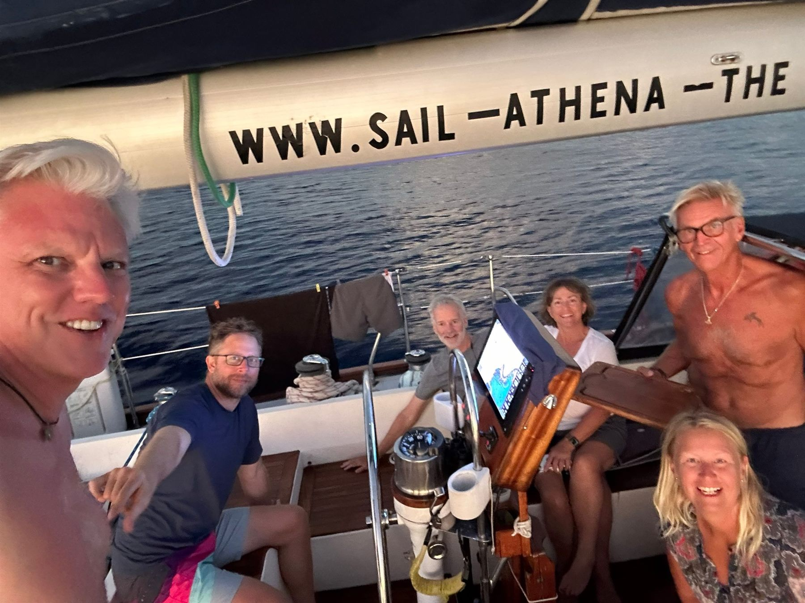

What past crew say
Ten reviews from guests who sailed with Captain Alf Grell and First Mate Susanne between 2019 and 2024. They are published as the guests wrote them.

My time on Lady Athena was an utterly amazing experience. Without a doubt I was the neophyte crew member aboard the leg of the journey of which I was a part; regardless, Captain Alf and First Mate Susanne treated me no different than the others – same expectations, same responsibilities, same shared sense of adventure. Organizations of meals, of shifts, of berths, etc. was meticulous; and the extensive knowledge of sailing and the ocean that they both have, and shared, made the trip even more satisfying than I expected. I will certainly sail with them again when my schedule permits. If you are looking for a sailing adventure, you’ll be glad to choose to sail with them.
12 days aboard Lady Athena was filled with sea adventures in the Bahamas, great crew culture and outstanding seamanship. Having a retired navy captain gave me peace of mind. Trip also included thoughtful food preparation and very well organized itinerary which gave me memories for life!
Lady Athena is a beautiful, well equipped boat. We sailed some pretty rough winds but Lady Athena handled these conditions very well. Captain Alf is a seasoned and qualified sailor and leader. Not only being a very competent sailor Susanne is also a well and very welcoming warm host and an efficient manager! Together, the two (Susanne and Alf) made a wonderful team. Me and my sister felt safe the whole journey from Grebbestad to Inverness. It was a great and pleasant adventure!
I would like to mention that I had one of the best times ever sailing with Susanne and Alf. From the time you all received me in the little village in France to Spain where I had to leave you all. The friendship, food and experience sailing with you all will forever be one of the best. If I did not have to work, I would sail with you all more often.
Everything was really great. The food, equipment, social atmosphere and the feeling of a really good adventure. I had my own big cabin which was very comfortable. I never had that luxury before! Fair winds and following seas guys!
I will always remember this journey with Lady Athena with a smile on my face. I learned so much from the professional captain and mate which gave me the urge and self confidence to get a boat on my own.
I had one of the best times in my life on Lady Athena. It was a challenge with handling the galley duties in the rough sea and high waves but the mate Susanne helped me out and really showed what team work is all about. I never sailed a boat this size before and the feeling by the helm was remarkable. We sailed under the stars and had dolphins around us several times. In all it was an adventure I’m truly happy to have done with you guys.
Thank you for a great and fun time onboard together, it was an adventure I will never forget!
Thank you so much Alf and Susanne for the good fun and atmosphere on the boat.
We spent 7 nights on board the S/Y Athena, captained by Alf Grell this summer, sailing the West Coast of Sweden. We had great sailing in the extremely beautiful archipelago, and highlights of the trip included stunning sunsets, the beautiful Koster Islands, and visiting seals and the lighthouse at the Weather Islands. We enjoyed cooking on board some evenings in the well equipped galley, but also treated ourselves to some excellent meals on shore several nights. The boat accommodated 6 of us extremely comfortably, and its interior below deck is well designed and fully equipped. We would highly recommend Alf as a captain and guide to this amazing part of Sweden.
Have you sailed with us? We would be glad to hear from you. Get in touch.